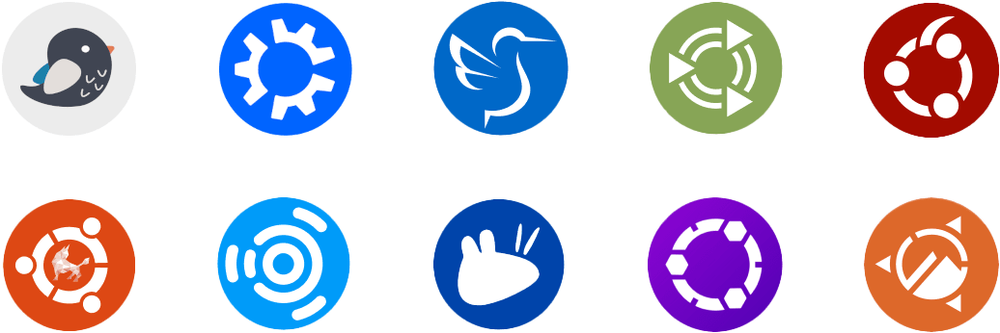

Ubuntu Linux for makerspaces
{kind=link}
Ubuntu is a modern and user-friendly, Linux-based operating system for desktops, laptops, servers, and single-board computers. The OS is free and consists primarily of free, open-source components and software.
Developed by Canonical, Ubuntu is a free, open-source Linux operating system for desktops, servers, and IoT devices. It is widely regarded as one of the most user-friendly distributions available.
* Release Schedule:
- LTS (Long-Term Support): published every two years; 5 years of updates
- Interim Releases: intermediate version; 9 months of support with the latest features.
Info & downloads: visit ubuntu.com.
Key STEM-advantages
Ubuntu is a versatile, open-source Linux distribution that aligns with the "Open, Free, and Accessible" philosophy of modern Makerspaces and FabLabs.
The combined use of Linux and open-source software facilitates 21st-century skills like critical thinking, problem-solving, collaboration and communication thanks to it's transparant and "hackable" environment.
* Zero-Cost Licensing: free to deploy across entire classrooms or labs.
* Privacy & Security: enterprise-grade standards for data protection and user privacy.
* Scalability: equally capable on a laptop, a server, or a single-board computer (SBC).
Install instructions
- Important: The following install instructions are for the Ubuntu 24.04 LTS (Long-Term Support) desktop edition:
Basic installation step-by-step
- Download the latest Ubuntu LTS release (ISO file) at: ubuntu.com/download/desktop
- Create a bootable USB flash or HDD drive using an image writer.
- Suggested software: Balena Etcher (Linux, Mac OS and Windows) or Rufus (Windows)
- Restart your PC or laptop from the USB flash or HDD drive
- Follow the step-by-step on-screen instructions
- A detailed instruction set, including screenshots, is provided by Ubuntu documentation
- Video tutorial: follow this excellent video guide by Explaining Computers
Post-install tips
Some handy post-install tips which can significantely increase useability and comfort:
- Terminal commands: start your Terminal using keyboard combination alt + ctrl + T
Start terminal: alt + ctrl + T
- Update OS:
sudo apt update
sudo apt upgrade
- Install Flatpak software center:
sudo apt install flatpak
sudo apt install gnome-software-plugin-flatpak
flatpak remote-add --if-not-exists flathub https://flathub.org/repo/flathub.flatpakrepo
sudo reboot
- Install Gnome-sushi 'quickview' option. This allows previewing files using <space bar>:
sudo apt install gnome-sushi
- Install resize image converter for the Nautilus file explorer. This allows
resizing images by clicking the <right-mouse> on the file and selecting the <resize> option.
sudo apt install nautilus-image-converter
killall nautilus
- Install proprietary codecs and fonts:
sudo apt install ubuntu-restricted-extras
Useful links
Official Ubuntu 'flavors'
Ubuntu uses the Gnome desktop environment as its modern and user-friendly user interface. If you prefer using a different desktop environment such as KDE, Xfce, Cinnamon, etc., you can install an Ubuntu 'flavor' or variant. Certain flavors are also recommended when using older or low-powered devices.
A comprehensive overview can be found on ubuntu.com/desktop/flavors

Click the image to explore the different Ubuntu variants.
Ubuntu-based Linux distributions
A number of popular Linux distributions are based on the Ubuntu software infrastructure. These are developed by their own teams and offer their own desktop experience and highlights.
An overview of popular Ubuntu-based distributions:
- Linux Mint: linuxmint.com
- Pop!_OS: pop.system76.com
- Zorin OS: zorin.com/os
- Elementary OS: elementary.io